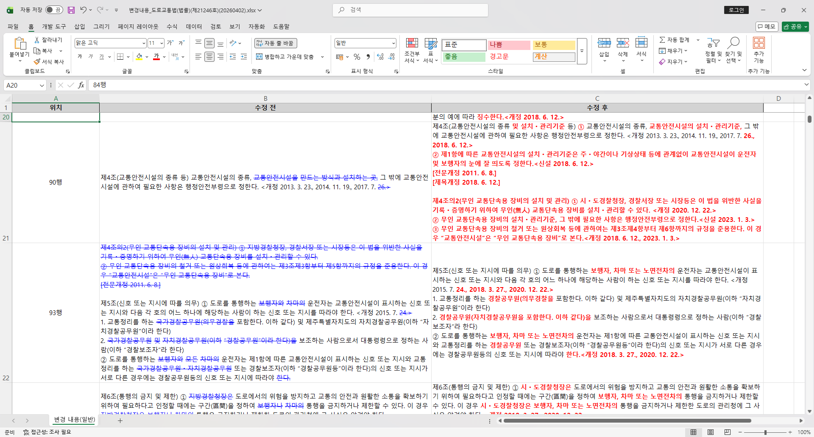

01 / 계약 검토·감사 자료 병합
계약서 비교와 엑셀 파일 병합
WORD COMPARE
계약서·규정 비교
개발 배경
계약서의 여러 수정본을 검토하면서 문구와 숫자가 바뀐 부분을 찾아야 했습니다. 비교할 파일을 반복해서 고르고, 변경 내용을 보고용으로 다시 정리하는 작업을 줄이려고 만들었습니다.
구현
Microsoft Word의 비교 기능으로 변경 추적 문서를 만들고, 추가·삭제된 내용과 위치를 엑셀 보고서로 정리합니다. 여러 문서 쌍도 한 번에 처리할 수 있습니다.
실무 적용과 결과
실제 계약서 검토와 상사 보고에 사용했습니다. 수정 전후를 나란히 확인할 수 있어 반복 비교와 변경사항 정리에 드는 부담을 줄였습니다.
- 개발 언어
- Python · Rust(문서 구조 추출 보조)
- 라이브러리
- PySide6 · python-docx · XlsxWriter
- Office 연동
- Microsoft Word COM
- 입력·출력
- Word 문서 두 개를 비교해 변경 추적 DOCX와 XLSX 보고서를 만듭니다.
- 빌드·배포
- PyInstaller · Windows 실행파일
저장소·실행파일↗Windows와 Microsoft Word 설치가 필요합니다.
EXCELMERGER
엑셀 파일 일괄 병합
개발 배경
업무에서 참조하는 여러 원천자료와 감사 제출용 파일을 한데 모아야 했습니다. 파일마다 내용을 복사해 붙이는 작업을 한 번에 처리하려고 만들었습니다.
구현
파일과 시트를 고르고 순서를 정해 시트·행·열 기준으로 병합합니다. 서식과 수식 처리 조건을 선택하고, Excel·LibreOffice 또는 파일 라이브러리 중 사용할 엔진을 고릅니다.
실무 적용과 결과
업무 참고용 raw-data 파일을 합치고, 회계감사에 전달할 재무제표·손익계산서·거래처 원장 등 여러 자료를 병합하는 데 사용했습니다. 반복적인 복사·붙여넣기를 일괄 병합으로 바꿨습니다.
- 개발 언어
- Python
- 화면 라이브러리
- PySide6
- 파일 라이브러리
- openpyxl · JPype/Apache POI
- Office 연동
- Excel COM · LibreOffice/PyUNO
- 빌드·배포
- PyInstaller · GitHub Actions
저장소·실행파일↗
크게 보기 ↗Word Compare · 추가·삭제 내용을 표시한 엑셀 보고서
02 / PETI
공직윤리 자료를 엑셀로 바꿉니다.
기관별 요청량에 따라 수십~수백 개에 달하는 공직윤리 TXT 파일을 전산 입력용 엑셀로 한 번에 합칩니다. 반복적인 병합·파싱·변환 시간을 크게 줄였고, 번호 앞의 0도 유지합니다.
파일을 합칠 순서와 저장 위치를 고르고 XLSX 또는 XLS로 저장합니다.
Go · JavaScriptWails · Excelize
XLS 변환에는 Microsoft Excel이 필요합니다.
PETI 사용 화면 ↗
 크게 보기 ↗
PETI 프로그램과 변환 결과. 식별정보는 예시입니다.
크게 보기 ↗
PETI 프로그램과 변환 결과. 식별정보는 예시입니다.
03 / 보고서 작성 자동화
DB에서 내려받은 엑셀로 금감원 보고서를 만듭니다.
DB에서 내려받은 엑셀의 필요한 열을 Google Sheets에 올립니다. 사용자가 시트에서 재계산을 누르면 Apps Script가 업무보고서와 상시감시보고서를 계산합니다.
- 개발 언어
- Python · JavaScript
- 라이브러리
- Flask · pandas · openpyxl
- 외부 API
- Google Sheets API · Apps Script API
- 실행 환경
- 로컬 웹 앱 · Google Apps Script
올린 자료와 중간 계산, 보고서를 각각 다른 탭에 두고 행 수와 잔액 합계를 검증표에 남깁니다. 이 과정을 자동화해 보고서 작성 시간을 3시간에서 5분으로 줄였습니다.
fines 사용 화면↗ 크게 보기 ↗fines · 금액대별 연계투자 현황
크게 보기 ↗fines · 금액대별 연계투자 현황